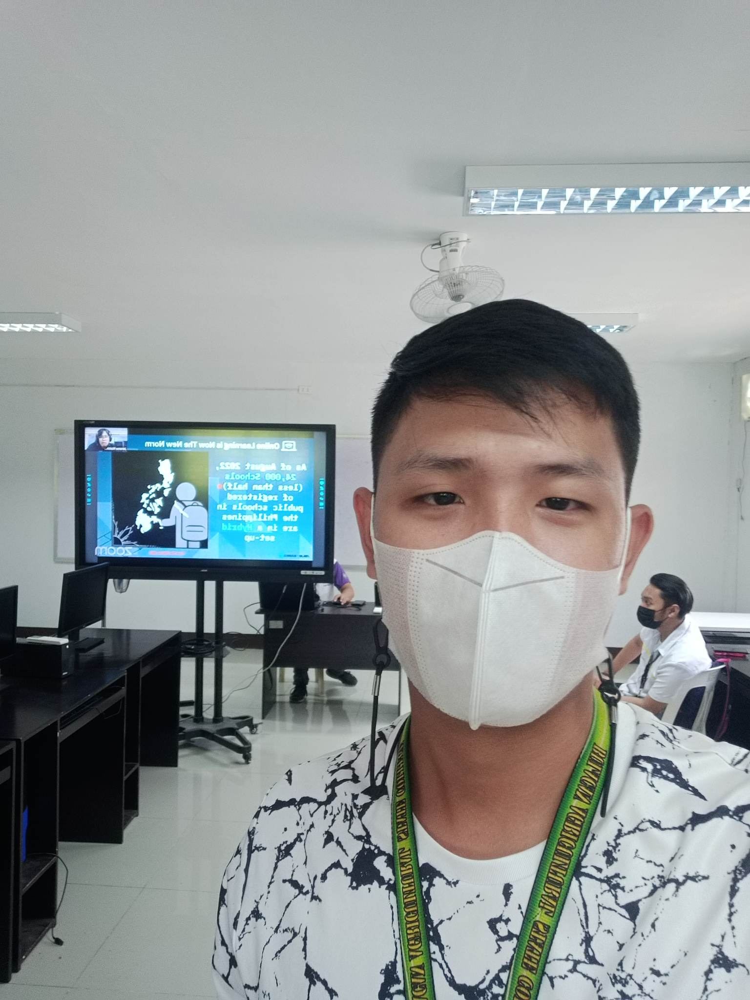
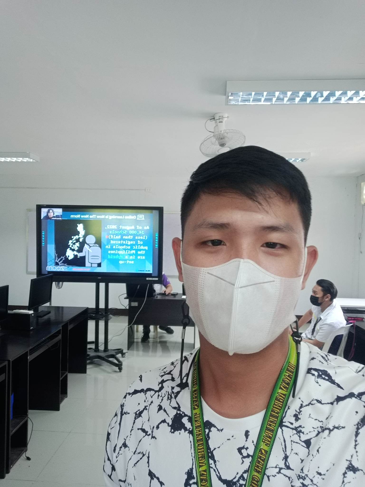

I AM
CHRISTIAN GEORGE SANTOS
I am Christian George Santos, currently living at Batasan Bata, San Miguel, Bulacan and I am 22 years old.
I am the second child among four children and I am playing taekwondo for sports.
My family is my strength and weakness.
They give me hope whenever I feel tired already and when I look at them,
they are giving me so much reason to work hard and strive harder to give them the life that they truly deserve.
When I see them sad, it makes me sad also that is why I am always trying to make them happy and proud even with the little things that I am doing.
We surpassed lots of problem before and I know that we are more ready today to face all the problems that is coming. I love helping people with the best of my ability because it makes me happy when I made someone's day by giving them an act of kindness. Maybe for me it is just a little thing but for them it means a lot. We don't know. I truly appreciate kindness and my heart becomes happy whenever someone compliments me. I always look on the positive side of life because there are so much negative people nowadays who thinks negatively so I shouldn't be one. Sometimes, I make decisions without thinking about it twice that is why I always come up with a wrong one. And about in our new normal and new normal of study I have a good relationship with my classmates and teachers as I am generally sociable in personality. I am thoughtful and helpful in school. As for my study. I pay special attention to the development of my thinking manners so that I become quick in thinking and broad in knowledge. Seeking reality and progress, I Have achieved excellence in my study. Morally I may say I am also excellent, because I am strict with myself, following the school’s rules and regulations, taking active part in various activities. In addition, I have developed many hobbies in my life. For example, I love reading, computer internet, music and sports. I have been a champion several times in Taekwondo and others sports like football, sepak takraw, touch football. In short, as a student studying at BASC I am determined to make my own contribution to our school. Because someday I want to become a professional person and be successful in my dreams in life. I want to help my family so I can lift them out of poverty. To do that I will try and do my best to fulfill that. No matter how hard life is now I will try my best to make it happen. Because nothing is impossible for the person who tries and pay attention to their dreams. Poverty is not an obstacle to give up, there is poverty to test us so that we can be strong and learn from the things we do wrong and when you learn that the day will come in your life, it will not so difficult because you have learned and passed through first and you also know that with every trial and difficulty there is God who will help to lift us up and lift us out of poverty.
 


Bachelor Of Science Information Technology
2020 - Present
•Secondary Education San Miguel National High School2019 - 2020
St. Paul University at San Miguel
2018
(Philippians 4:13).”